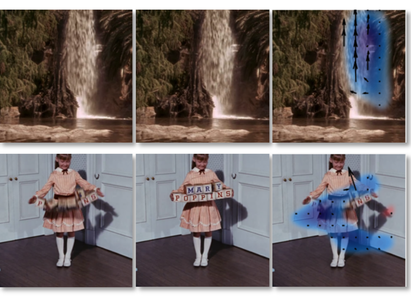
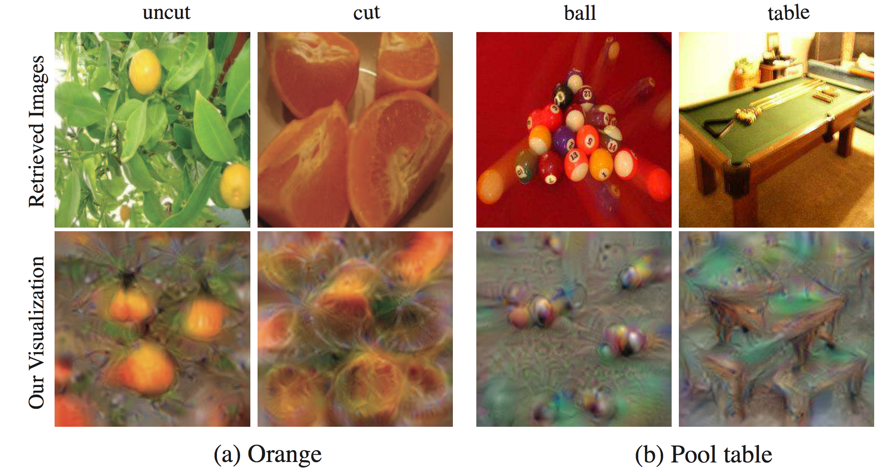
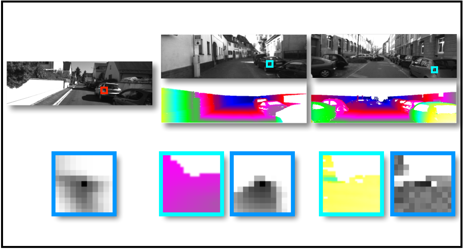
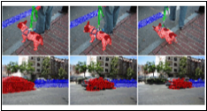
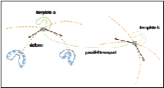

| Donglai Wei | |
| Postdoc, SEAS, Harvard University | |
| Postdoc Advisor: | Hanspeter Pfister |
| PhD Advisor: | William T. Freeman |
Research Interests
| Biomedical Image Analysis | General Image Analysis | |
|
| |
Journal Publications
 |
Motion Microscopy for Visualizing and Quantifying Small Motions
N. Wadhwa, J. Chen, J. Sellon, D. Wei, M. Rubinstein, R. Ghaffari, D. Freeman, O. Büyüköztürk, P. Wang, S. Sun, S. Kang, K. Bertoldi, F. Durand, W. Freeman
|
Deviation Magnification: Revealing Departures from Ideal Geometries
N. Wadhwa, T. Dekel, D. Wei, F. Durand, W. Freeman
|
|
 |
RNAG: A New Gibbs Sampler for Predicting RNA Secondary Structure for Unaligned Sequences
D. Wei, L. Alpert and C. Lawrence
|
Conference Publications
 |
Parallel Separable 3D Convolution for Video and Volumetric Data Understanding
F. Gonda, D. Wei, T. Parag, H. Pfister
|
|  |
Learning and Using the Arrow of Time
D. Wei, J. Lim, A. Zisserman, W. Freeman
|
Mining Visual Evolution in 21 Years of Web Design
A. Jahanian, P. Isola, D. Wei
|
|
|  |
Understanding Intra-Class Knowledge inside CNN
D. Wei, B. Zhou, A. Torralba, W. Freeman
|
|  |
A Data-driven Regularization Model for Stereo and Flow
D. Wei, C. Liu, W. Freeman
|
 |
Seeing the Arrow of Time
L. Pickup, Z. Pan, D. Wei, Y. Shih, C. Zhang, A. Zisserman and B. Schölkopf, W. Freeman
|
|  |
Video Representation Using Temporal Superpixels
J. Chang, D. Wei, and J. Fisher III
|
|  |
Learning Deformations with Parallel Transport
D. Wei, D. Lin and J. Fisher III
|
Patents
- US Patent App. 15/223,438 N. Wadhwa, T. Dekel, D. Wei, F .Durand, W. Freeman Deviation Magnification: Revealing Departures from Ideal Geometries.
Short Bio


|
Born and growing up in China |


|
Gradually became lost, ignorant but arrogant |

|
Born again |